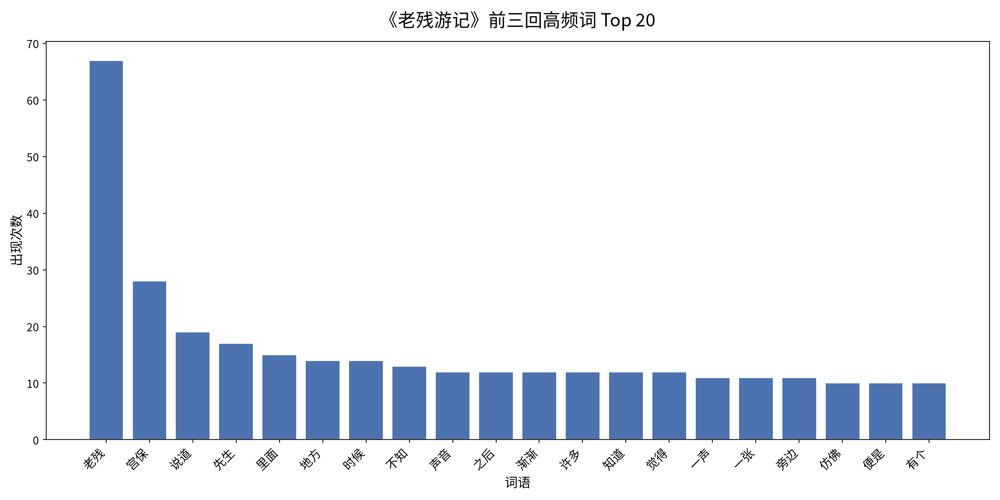

This page presents a simple computational text analysis of the opening
three chapters (第一回–第三回) of The Travels of Lao Can
(《老残游记》), a late Qing dynasty novel by Liu E (刘鹗), written
1903–1907. The source text was cleaned before analysis: the table of
contents, Liu E's self-preface (自叙), Hu Shih's preface (胡适序), and
Liu E's chapter-end commentaries (marked with ※※※) were all stripped,
leaving only the narrative body of the first three chapters (~16,000
characters). The text was segmented with jieba, common
Chinese stop words and single-character tokens were removed, and word
frequencies were counted.

| Rank | Word | Count |
|---|---|---|
| 1 | 老残 | 67 |
| 2 | 宫保 | 28 |
| 3 | 说道 | 19 |
| 4 | 先生 | 17 |
| 5 | 里面 | 15 |
| 6 | 地方 | 14 |
| 7 | 时候 | 14 |
| 8 | 不知 | 13 |
| 9 | 声音 | 12 |
| 10 | 之后 | 12 |
| 11 | 渐渐 | 12 |
| 12 | 许多 | 12 |
| 13 | 知道 | 12 |
| 14 | 觉得 | 12 |
| 15 | 一声 | 11 |
| 16 | 一张 | 11 |
| 17 | 旁边 | 11 |
| 18 | 仿佛 | 10 |
| 19 | 便是 | 10 |
| 20 | 有个 | 10 |
| 21 | 一只 | 10 |
| 22 | 船上 | 10 |
| 23 | 及至 | 9 |
| 24 | 弦子 | 9 |
| 25 | 一段 | 9 |
| 26 | 不是 | 9 |
| 27 | 看见 | 9 |
| 28 | 今日 | 9 |
| 29 | 两个 | 9 |
| 30 | 白妞 | 9 |
| 31 | 兄弟 | 9 |
| 32 | 法子 | 8 |
| 33 | 十分 | 8 |
| 34 | 甚为 | 8 |
| 35 | 后面 | 8 |
| 36 | 坐下 | 8 |
| 37 | 只见 | 8 |
| 38 | 船主 | 8 |
| 39 | 好处 | 8 |
| 40 | 王小玉 | 7 |
| 41 | 一条 | 7 |
| 42 | 园子 | 7 |
| 43 | 二十 | 7 |
| 44 | 名叫 | 7 |
| 45 | 三人 | 7 |
| 46 | 桌子 | 7 |
| 47 | 一片 | 7 |
| 48 | 慧生 | 7 |
| 49 | 实在 | 7 |
| 50 | 驾驶 | 7 |
The protagonist 老残 towers over the list (67 occurrences, more than double the second-ranked word), confirming that the novel is tightly focalized through its wandering physician-narrator, while 宫保 (28), 先生 (17), 白妞 (9), 王小玉 (7), and 慧生 (7) trace the supporting cast of officials and entertainers he encounters. The prominence of 说道, 不知, 只见, 仿佛, and 渐渐 reflects the novel's storyteller-style narration, in which scenes are introduced through observation and gradual, impressionistic perception rather than direct psychological disclosure. Finally, concrete setting words — 船上, 船主, 弦子, 园子, 桌子 — mirror the two signature set pieces of these chapters: the allegorical storm-tossed ship (a metaphor for a foundering China) and the celebrated singing performance of Wang Xiaoyu at Minghu Garden.